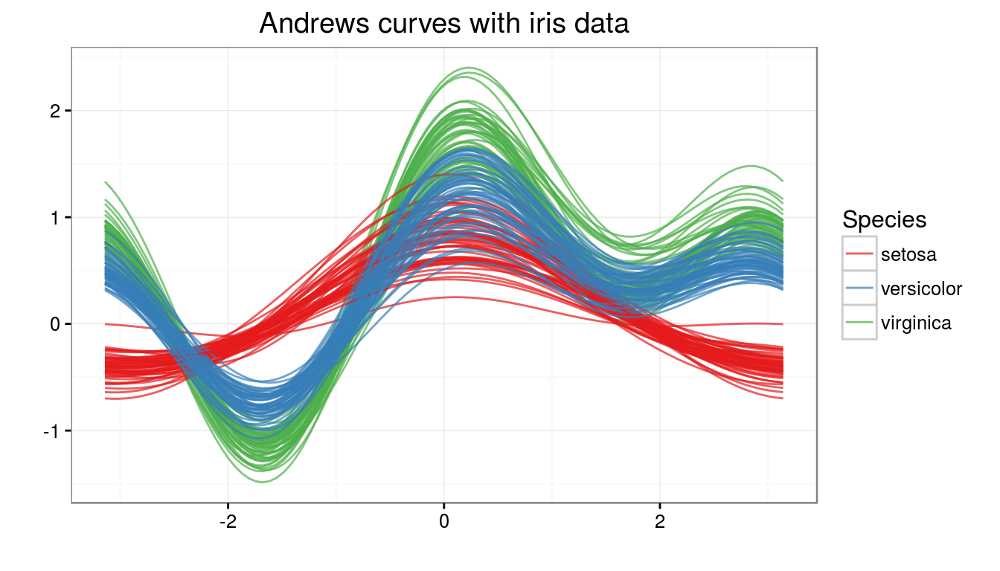
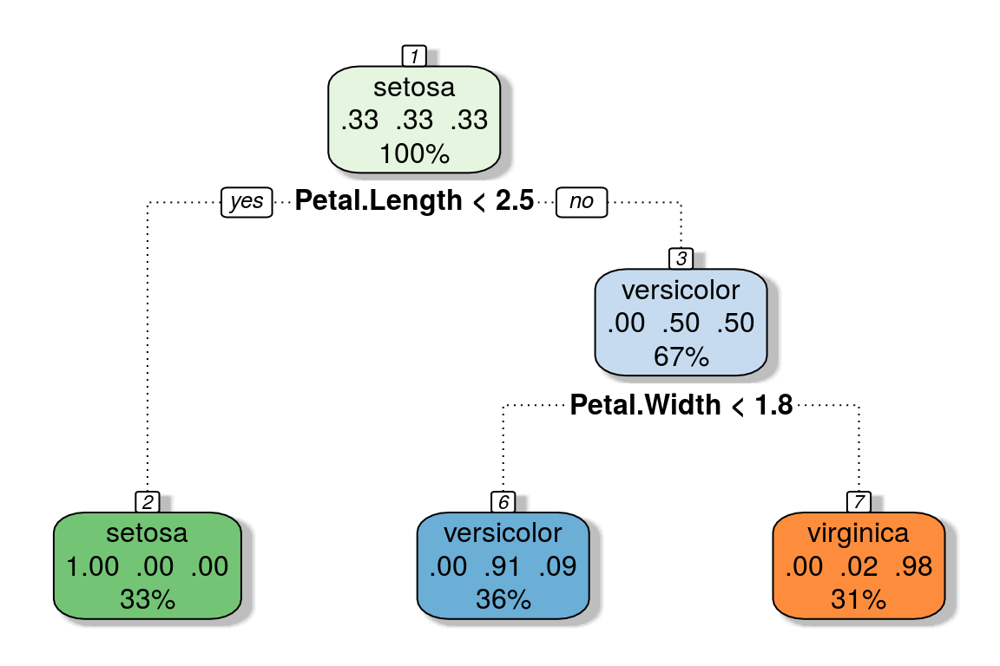
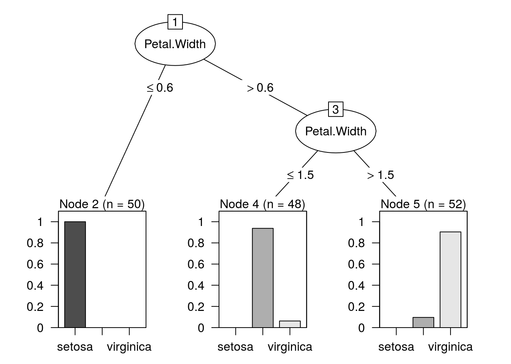
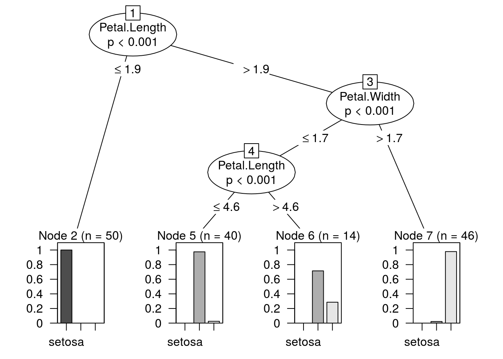

iris: The famous Fisher’s iris data set provided as a data frame with 150 cases (rows), and 5 variables (columns) named Sepal.Length, Sepal.Width, Petal.Length, Petal.Width, and Species.
head(iris)## Sepal.Length Sepal.Width Petal.Length Petal.Width Species
## 1 5.1 3.5 1.4 0.2 setosa
## 2 4.9 3.0 1.4 0.2 setosa
## 3 4.7 3.2 1.3 0.2 setosa
## 4 4.6 3.1 1.5 0.2 setosa
## 5 5.0 3.6 1.4 0.2 setosa
## 6 5.4 3.9 1.7 0.4 setosa
CART methodology consists of three parts:
Construction of maximum tree (binary). At each node CART solves the following maximization problem: \[ \underset {x_j \le \, x_j^R, \, j=1,\ldots,M} {\arg \max} \left[ i(t_p) - P_l i(t_l) - P_r i(t_r) \right] \] where \(t_p, t_l, t_r\) are the parent, left and right nodes; \(x_j\) is the \(j\)-th attribute; \(x_j^R\) is the best split value; \(i(t)\) is the impurity function; \(P_l, P_r\) are the probabiliites of left and right nodes. Gini index is used as the splitting criterion, \[ i_G(t) = \sum_{k \neq l} p(k \vert t) p(l \vert t) \] where \(k, l\) is the index of the class; and \(p(k \vert t)\) is the conditional probability of class \(k\) provided we are in node \(t\).
Classification of new data using constructed tree
model.cart <- rpart(Species ~., data = iris,
control = rpart.control(minbucket = 10, cp = 0))
nodes.summ <- summary(model.cart, file = tempfile())$frame
subset(nodes.summ, select = -yval2)## var n wt dev yval complexity ncompete nsurrogate
## 1 Petal.Length 150 150 100 1 0.50 3 3
## 2 <leaf> 50 50 0 1 0.00 0 0
## 3 Petal.Width 100 100 50 2 0.44 3 3
## 6 <leaf> 54 54 5 2 0.00 0 0
## 7 <leaf> 46 46 1 3 0.00 0 0confusionMatrix(predict(model.cart, type = "class"), iris$Species)$table## Reference
## Prediction setosa versicolor virginica
## setosa 50 0 0
## versicolor 0 49 5
## virginica 0 1 45
The tree construction algorithm is similar to CART. Notable differences include:
Impurity measure is based on entropy. Gain Ratio is chosen as the splitting criterion. \[ i_E(t) = - \sum_{k=1}^K p(k \vert t) \log_2 p(k \vert t), \] where \(p(k \vert t) = freq(C_k, t) / n\), the probability that an instance in \(t\) belongs to class \(C_k\). Suppose a test \(X\) partitions \(n\) instances in node \(t\) into \(s\) subsets, via child nodes \(t_1, \ldots t_s\) with \(n_j\) denoting the number of test instances going down node \(t_j\), \[ i_E^{(X)}(t) = \sum_{j=1}^s \frac {n_j}{n} \times i_E(t_j), \\ gain(X) = i_E(t) - i_E^{(X)}(t), \\ split\_info(X) = \sum_{j=1}^s \frac {n_j}{n} \times \log_2 \frac {n_j}{n}, \\ gain\_ratio(X) = gain(X) \,/\, split\_info(X) \]
Like CART applies post pruning to simplify results. Given a confidence interval \(CF\) (default 25%), let \(N\) be the number of training instances in a leaf, and \(E\) denote the resubstitution error rate \(f = E/N\). The prediction error is estimated as \(N \times U_{CF}(E, N)\), where \(U_{CF}(E, N)\) is the upper confidence limit from binomial distribution \(B(N, f)\).
Offers windowing, construction of trees for subsets of large training data. If resulting tree is not accurate enough to classify the cases out of the window, then an enlarged window is considered iteratively until convergence.
Reduction of number of outcomes of multivalued attributes by finding value groups.
model.c45 <- J48(Species ~ ., data = iris,
control = Weka_control(R = TRUE, M = 10))
summary(model.c45)##
## === Summary ===
##
## Correctly Classified Instances 142 94.6667 %
## Incorrectly Classified Instances 8 5.3333 %
## Kappa statistic 0.92
## Mean absolute error 0.0524
## Root mean squared error 0.182
## Relative absolute error 11.7831 %
## Root relative squared error 38.6033 %
## Coverage of cases (0.95 level) 98 %
## Mean rel. region size (0.95 level) 44.8889 %
## Total Number of Instances 150
##
## === Confusion Matrix ===
##
## a b c <-- classified as
## 50 0 0 | a = setosa
## 0 45 5 | b = versicolor
## 0 3 47 | c = virginica
ctree uses permutation tests for variable selection and a separate splitting procedure which can be based on any split criterion.
In step 1, we select the covariate with minimum \(P\)-value, i.e., the covariate \(X_{j^*}\) with \({argmin}_{j^* = 1,\ldots,m} \, P_j\), where \[
P_j = \mathbb P_{H_0^j}(c({\mathbf T}_j(\mathcal {L_n}, \mathbf w), \mu_j, \Sigma_j) \ge
c({\mathbf t}_j, \mu_j, \Sigma_j) \mid S(\mathcal {L_n}, \mathbf w))
\] denotes \(P\)-value of the conditional test for \(H_0^j\) (partial null hypothesis of independence between the covariate \(X_j\) and \(Y\)).
\(c\) is a univariate test statistic mapping an observed multivariate linear statistic \(t \in \mathbb R^{pq}\) into the real line. \(\mathbf T\) is a linear statistic which measures the association between \(Y\) and \(X_j\): \[
\mathbf T_j(\mathcal {L_n}, \mathbf w) = vec \left( \sum_{i=1}^n w_i g_j(X_{ji}) h(Y_i, (Y_1, \ldots, Y_n))^T \right) \in \mathbb R^{p_j q}
\] where \(g_j : \mathcal X_j \rightarrow \mathbb R_{p_j}\) is a non random transformation of the covariate \(X_j\),
\(h: \mathcal Y \times \mathcal Y^j \rightarrow \mathbb R_q\) is the influence function.
\(\mu_j \in \mathbb R^{p_j q}\) is the conditional expectation, and \(\Sigma_j \in \mathbb R^{p_j q \times p_j q}\) the covariance of \(\mathbf T_j(\mathcal {L_n}, \mathbf w)\) under \(H_0 = \bigcap_{j=1}^m H_0^j\), given all permutations \(S(\mathcal {L_n}, \mathbf w)\) of the elements \((1, \ldots, n)\) with corresponding case weights \(w_i = 1\).
In step 2, the goodness of split is evaluated by a two-sample linear statistic \(\mathbf T_{j^*}^A\) which is a special case of \(\mathbf T_j\) with \(g_{j^*}(X_{j^*i}) = I(X_{j^*i} \in A)\), where \(A \subset \mathcal X_{j^*}\). The split \(A^*\) with a test statistic maximized over all possible subsets \(A\) is established: \[ A^* = \underset {A} {\arg \max} \, c(\mathbf t_{j^*}^A, \mu_{j^*}^A, \Sigma_{j^*}^A). \]
model.ctree <- ctree(Species ~ ., data = iris,
control = ctree_control(minbucket = 10))
confusionMatrix(predict(model.ctree), iris$Species)$table## Reference
## Prediction setosa versicolor virginica
## setosa 50 0 0
## versicolor 0 49 5
## virginica 0 1 45
The primary advantage of Decision Trees is that they are visually interpretable and also provide statistical rigor. Each node splits data into different groups. A rule can be extracted by starting from the topmost node of the tree and following down the branches until a leaf is reached. The rules extracted from the CART example, looks as follows: - “IF Petal.Length < 2.5 THEN Species = setosa” - “IF Petal.Length > 2.5 and Petal.Width < 1.8 THEN Species = versicolor” - “IF Petal.Length > 2.5 and Petal.Width > 1.8 THEN Species = virginica”